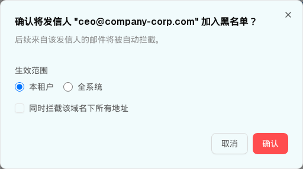
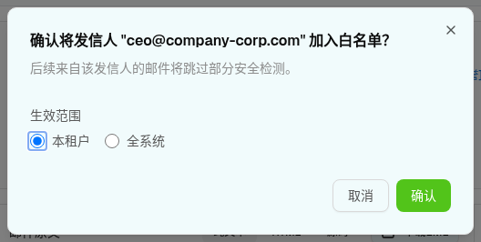
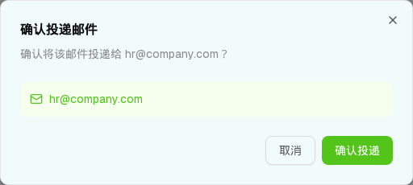
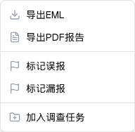

下方每个弹窗为运行中 demo（:3111）实测 dialog/menu 的 1:1 DOM。点「取消 / ✕ / 遮罩外」关闭，点「确认」按钮演示提交（不落库）。
① 发信人加黑确认（showBlacklistDialog）
radio「本租户/全系统」可切换；checkbox「同时拦截该域名下所有地址」可勾选；确认按钮红 #FF4D4F。
确认将发信人 "ceo@company-corp.com" 加入黑名单？
后续来自该发信人的邮件将被自动拦截。

UI 元素清单
| 元素 | 文案 / 取值 | 默认 / 交互 | i18n / 源码 |
|---|---|---|---|
标题 DialogTitle | 确认将发信人 "{log.sender}" 加入黑名单？ | text-base | 模板字符串（第 1318 行） |
描述 DialogDescription | 后续来自该发信人的邮件将被自动拦截。 | text-[#8C8C8C] | 第 1319 行 |
| 生效范围 label | 生效范围 | — | Scope |
| radio 本租户 | 本租户 | 默认选中；native input[name=scope] | blacklistScope="tenant" |
| radio 全系统 | 全系统 | native radio | blacklistScope="global" |
| Checkbox | 同时拦截该域名下所有地址 | 默认不勾选；radix #include-subdomains | includeSubdomains |
| Footer 取消 | 取消 | border #D9D9D9 → 关闭 | Cancel |
| Footer 确认 | 确认 | 红填充 #FF4D4F / hover #FF7875 → handleAction("blacklist") | Confirm |
落地映射：写入统一规则系统的发件人黑白名单（implement.md 第 5/12 条：不新增规则系统、不新增 action）。「生效范围」→ 租户维度；「含子域」→ 规则匹配模式（域名 vs 精确地址）。→ 主文件 §10 Q3
② 发信人加白确认（showWhitelistDialog）
结构同加黑，无「含子域」勾选；描述「跳过部分安全检测」；确认按钮绿 #52C41A。
确认将发信人 "ceo@company-corp.com" 加入白名单？
后续来自该发信人的邮件将跳过部分安全检测。

UI 元素清单
| 元素 | 文案 / 取值 | 默认 / 交互 | i18n / 源码 |
|---|---|---|---|
| 标题 | 确认将发信人 "{log.sender}" 加入白名单？ | text-base | 第 1345 行 |
| 描述 | 后续来自该发信人的邮件将跳过部分安全检测。 | text-[#8C8C8C] | 第 1346 行 |
| radio 本租户 / 全系统 | 本租户（默认）/ 全系统 | native input[name=whitelist-scope]（复用同一 blacklistScope state） | 第 1352–1353 行 |
| Footer 确认 | 确认 | 绿填充 #52C41A / hover #389E0D → handleAction("whitelist") | Confirm |
③ 投递确认 · 单收件人（showDeliverConfirm）
仅单投场景、且收件人处于「隔离中 / 待审核」时，顶部出现「投递」按钮触发；绿底信息条显示收件人。
确认投递邮件
确认将该邮件投递给 hr@company.com？

UI 元素清单
| 元素 | 文案 / 取值 | 说明 |
|---|---|---|
| 标题 | 确认投递邮件 | 第 1368 行 |
| 描述 | 确认将该邮件投递给 {收件人}？ | 无 selectedRecipientData 时退化为「确认将该邮件从隔离区释放并投递到收件人邮箱？」（第 1370–1376 行） |
| 信息条 | ✉ {收件人} | 绿底 bg-[#F6FFED] + text-[#52C41A] + Mail 图标 |
| Footer | 取消 / 确认投递 | 确认投递 = 绿 #52C41A → handleRecipientAction("deliver", email) |
同族变体（未单列预览，结构一致）：丢弃确认 showDeleteConfirm（标题红 #F5222D「确认丢弃邮件」，描述含「该操作不可恢复」，红底信息条 #FFF1F0，确认按钮红「确认丢弃」）；召回确认 showRecallConfirm（标题「确认召回邮件」，蓝底信息条 #E6F7FF/#1890FF，额外说明段「召回操作将尝试从收件人邮箱中删除该邮件。召回成功率取决于邮件客户端和服务器配置。」，确认按钮蓝 #1890FF「确认召回」）。
④ 批量处置结果「操作完成」（showBatchResultDialog）
仅多投场景：收件人矩阵勾选后点「批量投递/隔离/丢弃」，1.5s 后弹出逐收件人成败汇总（max-w-md）。
操作完成

UI 元素清单（以「批量投递」为例）
| 收件人 | 前状态 | 结果 | 底色 |
|---|---|---|---|
| finance@company.com | 已投递 | 当前状态不支持该操作 | 红 #FFF1F0 |
| hr@company.com | 隔离中 | 已投递 | 绿 #F6FFED |
| admin@company.com | 待审核 | 已投递 | 绿 #F6FFED |
| user1@company.com | 已阻断 | 邮件已阻断，无原文，不可操作 | 红 #FFF1F0 |
| user2@company.com | 已丢弃 | 邮件已丢弃，无原文，不可操作 | 红 #FFF1F0 |
逐收件人一行：成功 → 绿底「前状态 → 后状态」；失败 → 红底「前状态 → 失败原因」（第 1464–1481 行 batchResults.map）。这是 demo 中唯一实现「部分成功」结果汇总的地方（列表页批量处置没有）。失败判定：已投递（canOperate 但无 deliver 动作）→「当前状态不支持」；已阻断/已丢弃（canOperate=false，无原文）→「无原文，不可操作」。Footer 仅「确定」（primary）。
⑤ 「更多」下拉菜单（DropdownMenu / moreActions）
点「⋯ 更多」触发；6 项 + 2 分隔线，w-48 右对齐。

UI 元素清单
| 菜单项 | 图标 | onClick |
|---|---|---|
| 导出EML | Download | console.log（未实现） |
| 导出PDF报告 | FileText | console.log（未实现） |
| ── 分隔线 ── | ||
| 标记误报 | Flag | console.log（未实现） |
| 标记漏报 | Flag | console.log（未实现） |
| ── 分隔线 ── | ||
| 加入调查任务 | FolderPlus | console.log（未实现） |
DOM 树比对结果（嵌入的预览 HTML ↔ demo 实测渲染）
| 比对项 | demo 实际 DOM | 嵌入的 HTML | 一致 |
|---|---|---|---|
| ① 加黑根节点 | [role=dialog][data-slot=dialog-content] sm:max-w-lg | 一致 | ✅ |
| ① 加黑 radio | 2 个 native input[type=radio][name=scope]，首个 checked | 2 个 | ✅ |
| ① 加黑 checkbox | 1 个 radix #include-subdomains（默认 unchecked） | 1 个 | ✅ |
| ② 加白结构 | 无 checkbox；2 个 native input[name=whitelist-scope]；描述「跳过部分安全检测」 | 一致（新捕获核对） | ✅ |
| ② 加白确认色 | bg-[#52C41A] hover:bg-[#389E0D] | 一致 | ✅ |
| ③ 投递信息条 | Mail 图标 + bg-[#F6FFED] text-[#52C41A] | 一致 | ✅ |
| ④ 批量结果行数 | 5 行（Q2财务报表 5 收件人；2 绿 3 红） | 5 行 | ✅ 修正（旧稿误写 3 行） |
| ④ 批量结果宽度 | max-w-md（覆盖 sm:max-w-lg） | 一致 | ✅ |
| ⑤ 更多菜单 | 6 项 menuitem + 2 separator，w-48 | 6+2 | ✅ |
| ⑤ 菜单包裹 | demo 中 radix 通过 [data-radix-popper-content-wrapper] portal 到 body | 预览内改为紧贴触发按钮的静态菜单（无 radix runtime） | △ 预览简化（定位方式，非内容差异） |